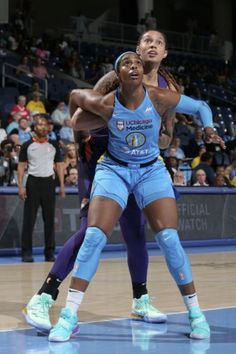

Basketball
WHAT IS THE BASKETBALL
GAURD
FORWARD
CENTER

Center의 역할
명칭의 유래는 양쪽으로 나뉘어져서 수비하는 가드, 공격하는 포워드와 달리 상황에 따라 양쪽을 오갈 수 있는 유일한 포지션이었기 때문에 중앙을 뜻하는 센터라는 이름을 가지게 되었다. 대체로 키가 가장 큰 선수가 맡는다. 골밑 슛과 리바운드, 블록킹 등 최종방어 지역에서의 수비 및 공격을 이끌어 나간다.